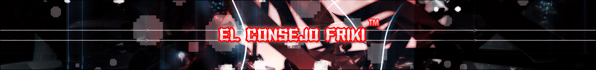

Apertura ECF 2.0
Nueva casa, nuevo dominio y regalos para los 10 primeros registrados.
2008 · · · 2026

«No hay honor más placentero, que de este portal ser un consejero.»
Muy pronto · Estad atentos
Hace casi veinte años, el 9 de noviembre de 2008, abrimos ECF 2.0. Ese mismo día 71 consejeros se conectaron a la vez, y lo que vino después fueron quedadas, noches de vicio, concursos, torneos, una radio, un fansub y hasta una asociación.
Las puertas del Consejo se vuelven a abrir. Lo de siempre, con las mismas ganas.
Salu2
La Administración de El Consejo Friki
Nueva casa, nuevo dominio y regalos para los 10 primeros registrados.
Un ciber entero para nosotros. Counter-Strike, Left4Dead y toda la noche por delante.
La primera asamblea: de foro a asociación.
Todos los estilos, todos los autores, y voz para las partidas.
AMV's, firmas, Street Fighter IV y Tatsunoko Vs. Capcom.
Nuestro primer lanzamiento: Urooboe Uroboros.
Once quedadas oficiales, Expocómic y Japan Weekend.
Nuestro deporte. Y el ClanCombat, creado por el Consejo.
Si alguna vez fuiste consejero, esta sigue siendo tu casa.
Muy pronto, más información